Week1
Week1
Machine Learning
A computer program is said to learn from experience E with respect to some class of tasks T and performance measure P, if its performance at tasks in T, as measured by P, improves with experience E
E = the experience of playing many games of checkers
T = the task of playing checkers.
P = the probability that the program will win the next game.
classified : supervised learning or unsupervised learning
Supervised Learning
we are given a dataset and already know what our correct output should look like,
having the idea that there is a relationship between the input-output
- regression
(predict results within a continuos output, map input variables to some continuos function)
- classification
(predict results in a discrete output, map input variables to discrete categories)
also called clustering algorithm
unsupervised learning
allows to approach problems with little or no idea what our results look like
derive structure from data where we don't know variable effects
derive this structure clustering based on reltionships among variables
Model and Cost Function
Linear regression
m = no of training examples
x's input var / features
y's output var / target variable
(x,y) - one training example
(x(i), y(i) ) - ith training example
Training set
|
Learning Algorithms
|
X <- h - > Y
hypothesis : h function maps from X's to Y's
Y vs X graph, determine h(x) - Linear regressiom wit one variable(univariate linear regression)
h : X->Y so that h(c) is a good predictor for corresponding value of y
accuracy of the hypothesis function is measures by using cost function - average difference of all the results in hypothesis
J(O1,O2) = 1/2m ( Summation ( y'(i) - y(i) )^2
y'(i) = h(x(i))
minimize the difference between the predicted value and actual value ( mean squared error )
our objective is to get the best possible line so that avarge vertical distances of the scattered points from the line will be the least!
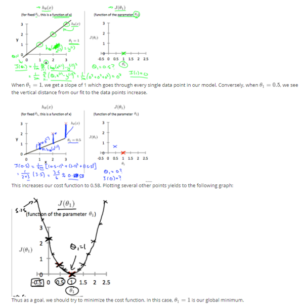
Contour plot - a graph that contains many contour lines
- it is a two variable function has a constanat value at all the points of the same line
- same value of cost around consider single circle/ contour
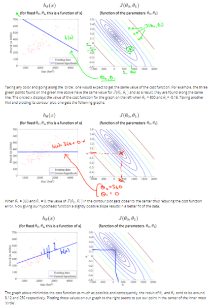
Gradient descent
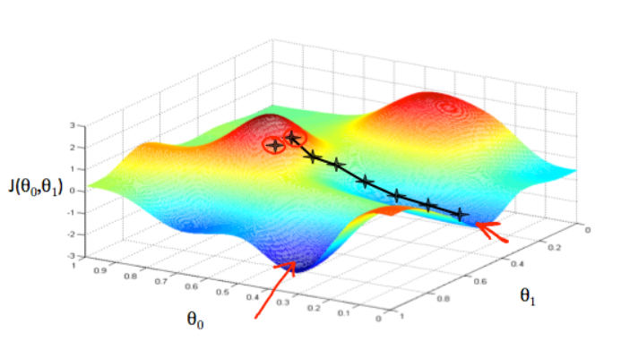
we need to estimate the parameters in the hypothesis function
Red arrow shows the minimum points in the graph
based on the parameter range J(O1,O2), we find the cost function values
using a tangential line to a function(derivative of cost function), show increasing or decreasing condition, we follow this to direct towards the steepest descent.
size of each step is determined by the parameter ( α alpha) called the learning rate
a smaller learning rate would be smaller step, and visa versa
direction is determined - using partial derivative of the J(O1,O2) until convergence
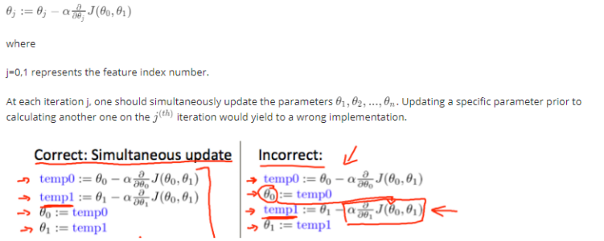
θ
1
:=
θ
1
−
α
dθ
1
d
J
(
θ
1
)
- single parameterMore imporatantly
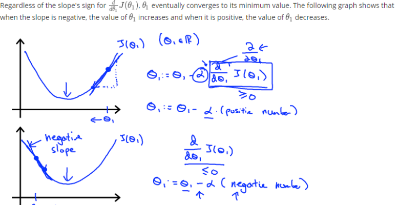
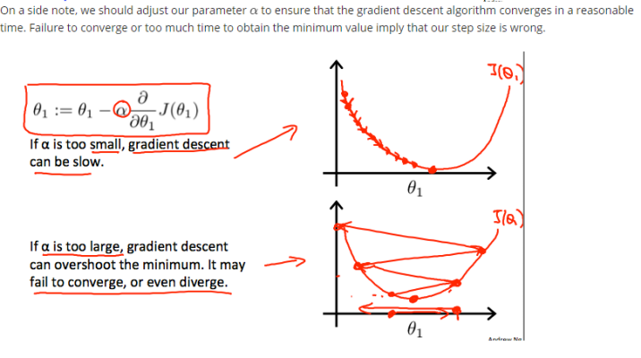
The problem of gradient descent is different local optima (steepest/ lowest points)
cost function of linear regression is always a bow shaped function :
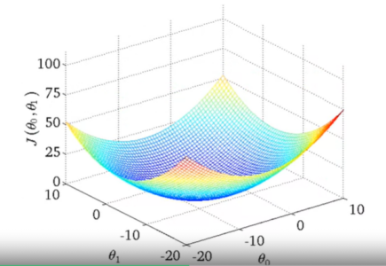
this is called convex function.
because of this, the problem of different local optima is not present, as it has single global optima
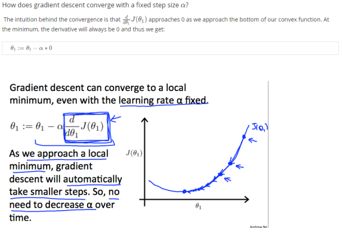
applying gradient descent with linear regression
applying multivariable calculus
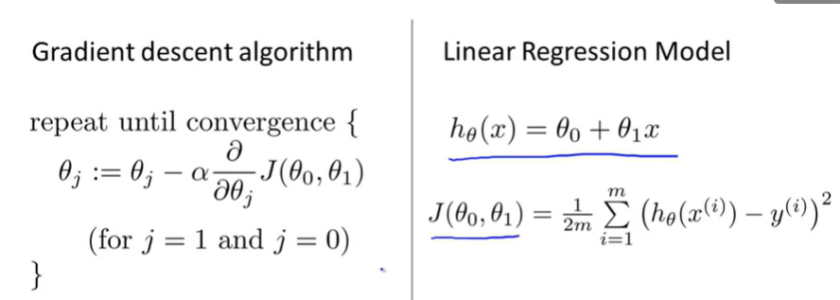
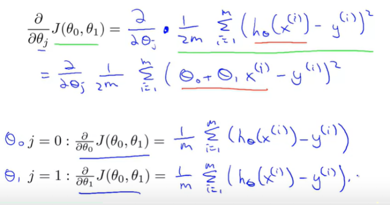
repeat until convergence:
{
θ0:=θ0−α1/m∑ [i=1...m] ( hθ(xi)−yi )
θ1:=θ1−α1/m∑ [i=1...m] ( (hθ(xi)−yi) xi)
}
how the linear regression works if any point int he contour is consider and slowly it adjusted according to the center of the contour lines with h(x)

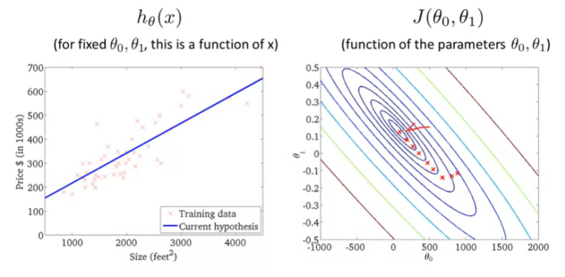
this is called batch gradient descent,
batch - each step of graident descent uses all the training examples
∑ [i=1...m] ( (hθ(xi)−yi) xi) this summation from 1 to m is what makes this called the batch